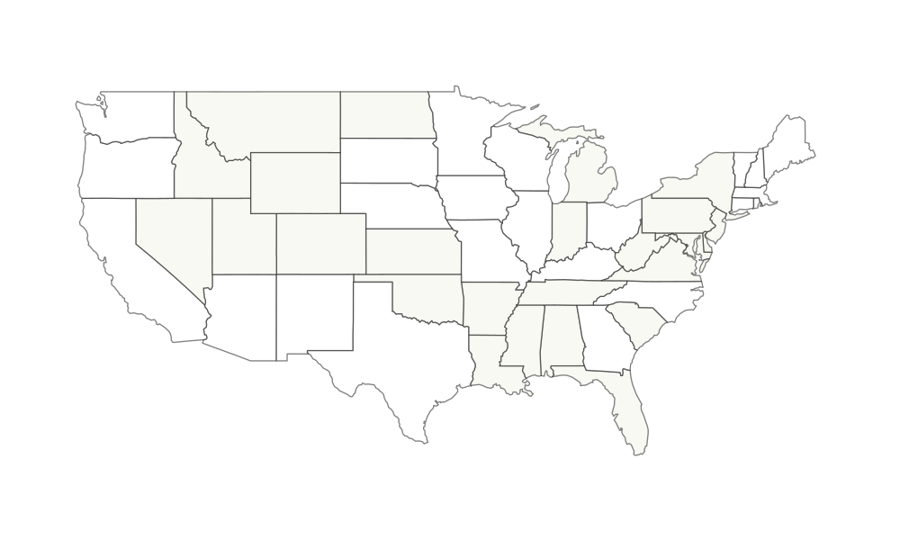

What I built in Tableau
A location-based performance view.
The original workbook joined employee, rating, manager, and ZIP code tables, then used Tableau's geographic ZIP role to display where lower-scoring employee groups were concentrated.
Tableau project recreation
This recreates the map feature from my Tableau workbook using the original source data, aggregated by location and ZIP code so the portfolio can show the analysis without exposing individual records.
Recovered worksheet

Marker size reflects employee count. Marker color reflects average rating by location.
What I built in Tableau
The original workbook joined employee, rating, manager, and ZIP code tables, then used Tableau's geographic ZIP role to display where lower-scoring employee groups were concentrated.
Portfolio-safe recovery
The displayed map is rebuilt from aggregate location metrics only: ZIP code, location code, employee count, rating-row count, and average rating. Names, salaries, dates of birth, managers, and row-level records stay out of the site.